영등포구
경리단길
개요 번화가라 하기엔 조그마한 편이고, 이태원동에 속한 지역이지만 이태원과는 이질적인 분위기 때문에 유명하다
특징 일반적인 식당보다는 분위기 좋은 술집이나 카페가 많아 한국에 체류하는 외국인들이 찾아오는 곳이다.
평점 4.35/5
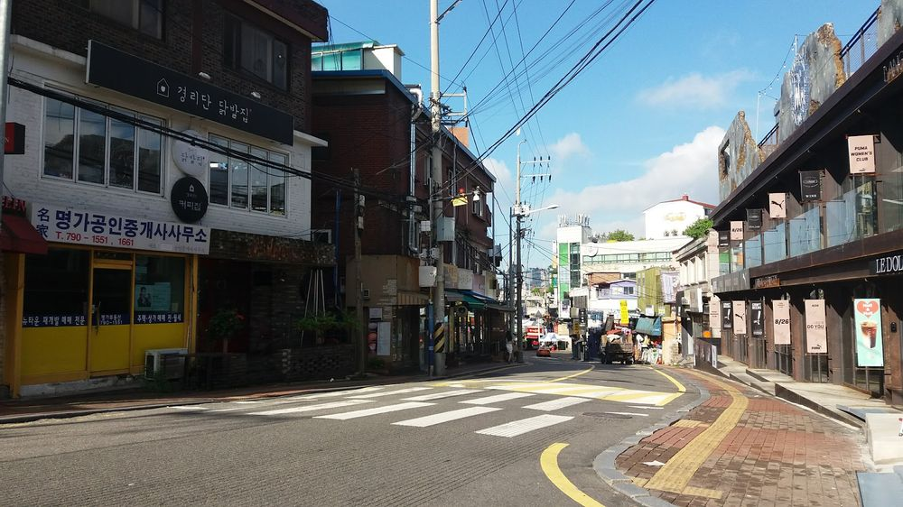국립중앙박물관
서울특별시 용산구 용산동6가에 위치한 한국의 대표 국립 박물관
한국의 고미술, 유물을 중심으로 소장하고 있으며, 소장 유물 약 40만 7천여 점[4]으로 한국 최대의 박물관이면서 세계적으로도 상당한 규모이다.
평점 4.22/5
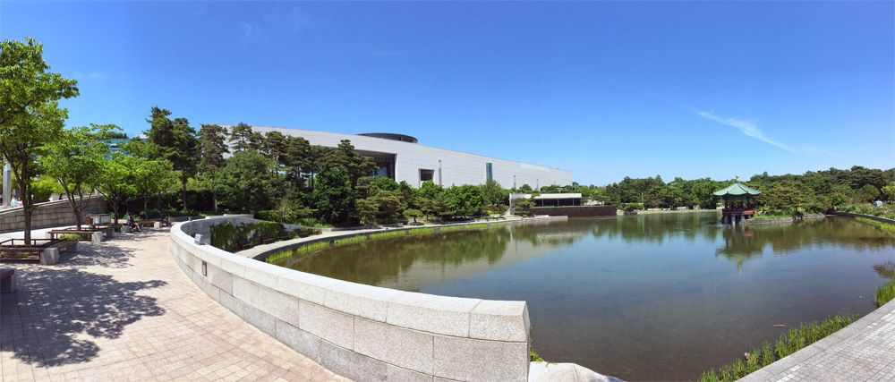남산타워
개요 서울특별시 남산에 있는 송신탑이자 서울을 대표하는 랜드마크이다.
특징 탑 자체의 높이는 236.7m로, 일반적인 랜드마크 구조물과 비교하면 다소 낮은 편이지만 남산의 해발고도까지 합하면 479.7m가 된다.
평점 4.52/5
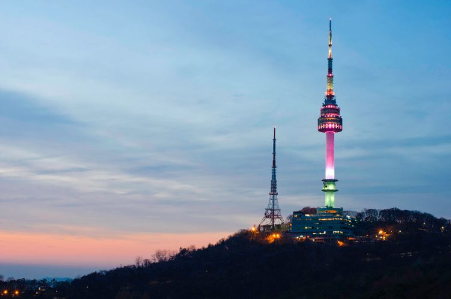블루스퀘어
인터파크에서 건설하고 인터파크 그룹의 공연장 전문 운영 법인인 인터파크씨어터에서 운영하는 대중음악 및 뮤지컬 전용 공연장이다.
주소는 서울특별시 용산구 이태원로 294 (한남동)이다. 서울 지하철 6호선 한강진역 2번 출구와 바로 연결되어 있어 접근성이 매우 뛰어나다. 2009년 착공하여 2011년 11월 4일 개관했다.
평점 4.32/5
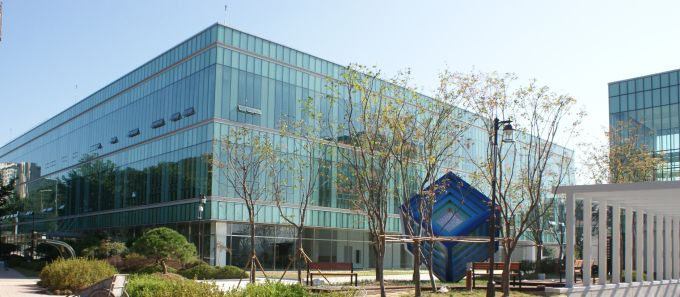리움미술관
삼성문화재단에서 만든 사립 미술관.
삼성그룹 창업주이자 소문난 미술 애호가인 이병철 회장의 Lee와 museum의 um을 따서 리움이라고 이름을 붙였다
평점 -
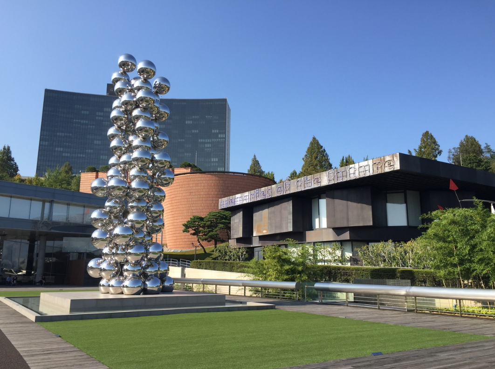용산전자상가
대한민국 서울특별시 용산구에 위치했던 국내 최대 규모의 전자제품 상가다. 2022년 기준 재개발이 진행되고 있다.
정식 명칭은 "용산 전자상가"지만 흔히 "용던"이라고 부른다. "용산 던전"의 줄임말로서 던전같은 복잡한 구조, 용팔이, 다양한 아이템 때문에 생긴 별명이다.
평점 4.22/5
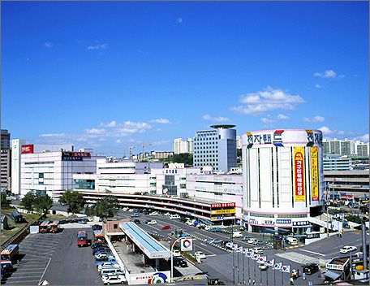용산공원
서울특별시 용산구에 주둔 중인 대부분 주한미군 용산기지가 2017년 말까지 평택시 USAG 험프리스로 이전함에 따라, 공터로 남는 이곳을 활용하기 위해 계획된 국가 공원. 용산민족공원이라고도 알려져 있다.
처음에는 국무총리실에서 관할하였으나, 현재는 국토교통부가 추진하고 있다. 용산 미군기지가 있던 곳은 대한민국 국유지로서 미국에 빌려 준 것이기 때문이다.
평점 4.22/5
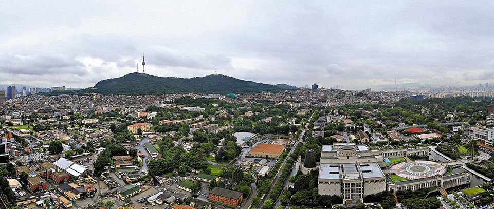이태원동
용산구의 대표적인 번화가이자 외국인, 외국 상품, 외국 문화의 집결지로 유명하다.
이태원은 (프랑스인들이 상대적으로 많이 모여 사는) 서초구 서래마을과 더불어 서울의 대표적인 다문화 거리로 꼽힌다.
평점 4.22/5
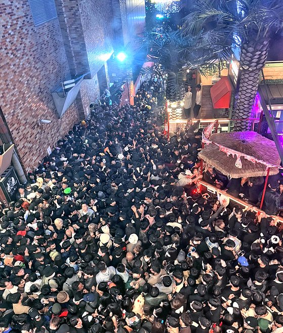한강공원
서울특별시 한강 일대에 위치한 공원.
각종 체육시설과 휴게시설이 있으며, 한강 유람선을 탈수 있는 선착장 등이 있다. 자전거길이 잘 되어있기 때문에 서울에서 자전거를 즐겨타는 사람이 자전거 산책용으로 즐겨찾는 곳 중 하나이기도 하다.
평점 4.22/5
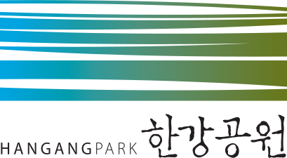전쟁기념관
전쟁기념관은 서울특별시 용산구 이태원로 29(용산동1가)에 위치한 국립 박물관이다
외국인 관람객들이 상당히 많다. 아시아 최대 규모의 전쟁 무기 박물관인 이유도 있을 것이고,[4] 6.25 전쟁에 유엔군의 일원으로 참전한 국가들의 대형 국기 및 그들 각각에 대한 기념비와 함께 참전용사 한 분 한 분을 추모하고 경의를 표하는 시설을 대단히 잘 해놓았기 때문에, 미국, 영국, 캐나다 등 6·25 참전국에서 방문한 사람이라면 가슴 벅찬 감동을 느낄 수 있는 장소이기 때문이기도 하다.
평점 4.22/5
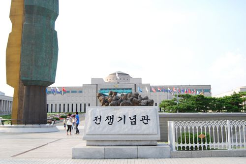해방촌
용산구에 위치한, 행정구역상 용산동2가와 후암동 고지대 동네 일부 지역을 지칭하는 말이다. 해방과 더불어 형성되었다 하여 '해방촌'이라는 이름이 붙었다.
해방 직후 북한에서 월남한 실향민들이 집단으로 거주하면서 이 지역에 촌락을 이루게 되고, 이후 도시가 발전하며 이촌향도한 이주민들이 다시 한번 대거 들어와 동네를 형성하게 된다
평점 4.22/5
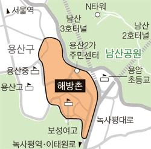추천맛집
화양연가
평점 4.8/5
서울특별시 용산구 한강대로76길 5
양고기
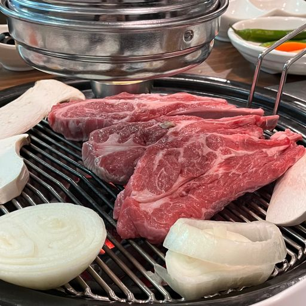야스노야지로
평점 4.7/5
서울특별시 용산구 백범로87길 19 1F
일식
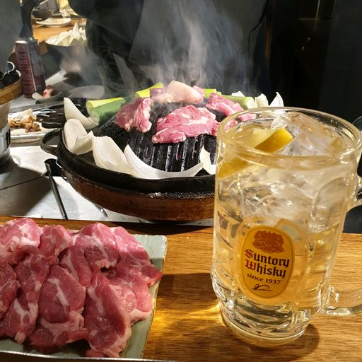서울케밥
평점 4.7/5
서울특별시 용산구 새창로 181 선인상가 1F 11호
케밥